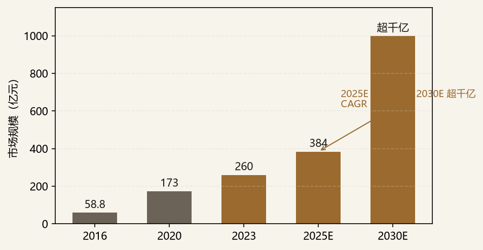
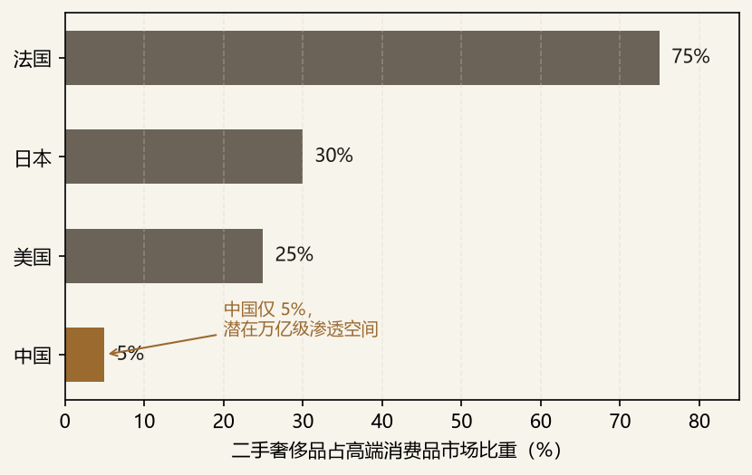
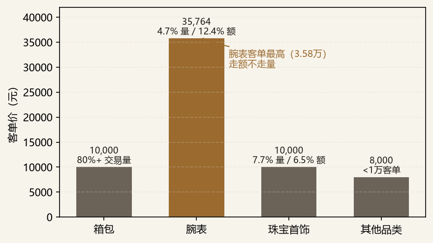

二手奢侈品（循环时尚）是转转「多品类综合二手交易平台」战略下客单价最高、且最依赖信任壁垒的品类之一。转转已于 2024 年 9 月全资收购红布林，二奢的核心能力（鉴定 / 评级 / 定价）已并入转转「官方验」多品类鉴定体系。因此本备忘录的命题不是「转转要不要进二奢」，而是「在已具备平台与红布林能力的前提下，如何把二奢做深、做厚，并通过少数股权 / 合作把鉴定与直播能力外扩」。
核心判断：①市场仍处早期，中国渗透率仅 5%，显著低于发达国家 20%–30%，对应近 4 万亿奢侈品存量，潜在空间达万亿级；②短期有回调（2023 年 3 月后二奢业绩持续下滑、2024 年行情偏弱），但结构性机会明确；③鉴定能力是核心壁垒与信任基石，红布林整合后转转「官方验」具备差异化；④直播 + 鉴定 + 出海价差是可放大的三杠杆。对战投而言，二奢是「能力外扩 + 高客单增长极」的战略拼图，而非单纯 GMV 补量。
边界：区别于「一手奢侈品零售」（贝恩口径一级市场）与转转主品类「3C 二手」（客群与供应链不同），本备忘录聚焦二奢垂直；也不覆盖泛品类寄卖平台。对转转而言，二奢的战略意义在于「高客单 + 女性 / 高端时尚客群 + 鉴定信任」，与 3C 男性用户形成互补。
需求侧，一级奢侈品市场放缓使二奢成为「平替」：贝恩数据显示 2024 年中国境内奢侈品销售额同比下降约 17%，而二奢作为一级市场的性价比替代，需求逆势上行。从规模看，二奢市场已由 2016 年 58.8 亿元增长至 2023 年 260 亿元（CAGR 约 11%），预计 2025 年达 384 亿元、2030 年超千亿元：

渗透空间是更关键的叙事。中国二奢渗透率仅约 5%，而美国、日本达 20%–30%，法国更有 75% 的消费者购买过二手奢侈品。以中国近 10 年约 4 万亿元奢侈品存量计，若渗透率从 5% 提升至 20%–30%，对应潜在交易规模达万亿级：

五大驱动力：①一级市场放缓，二奢成理性消费「平替」；②年轻化，Z+Y 世代占二奢关注人群 80%+，18–35 岁女性为核心，小红书 #二手奢侈品 话题浏览超 40 亿（2025.8）；③政策与 ESG，《十四五循环经济发展规划》《促进绿色消费实施方案》鼓励「互联网 + 二手」；④直播电商催化，抖音 / 快手 / 小红书使信息不对称下降，红布林直播客单价达常销 3 倍；⑤出海价差套利，以 LV Speedy25 为例，国内采购约 6000–8000 元、出口美国售价约 1500 美元（约 1.04 万元），价差窗口期明确。
| 环节 | 构成 | 价值判断 |
|---|---|---|
| 上游（供给） | 个人卖家 + 专业卖家，地域分散 | 供应链极分散，货源稳定性是瓶颈 |
| 中游（核心） | 鉴定 + 定价 + 销售（平台控货） | 利润与壁垒集中地，鉴定能力决定信任 |
| 下游（流量） | 直播 / 货架电商 / 线下体验店 | 获客成本高（250–300 元/人），信任是转化关键 |
| 衍生 | 鉴定能力输出 / 溯源 / 出海合规 | 可产品化为行业基础设施，杠杆最大 |
从转转战投视角，二奢对平台有三重价值：①高客单提升 ARPU（腕表客单 3.58 万元，远高于 3C）；②鉴定能力 = 信任壁垒，反哺全品类「官方验」；③与红布林协同，覆盖女性 / 高端时尚人群，补上转转原有 3C 男性为主的人群短板。本备忘录以「能力外扩」为主线，覆盖四条相邻赛道：
| 标的 | 赛道 | 利好（投资逻辑） | 利空 · 风险 | 主要股东 / 战投 | 状态 |
|---|---|---|---|---|---|
| 红布林 Plum | 平台（已收购） | 覆盖 2000+ 品牌，鉴定 / 评级 / 定价壁垒，直播客单 3 倍，已并入转转官方验 | 整合执行风险、二奢短期回调 | 转转（全资，2024.9） | 已整合（转转内部） |
| 胖虎 Ponhu | B2C 回收转卖 | C+ 轮 4500 万美元，回收 + 寄卖双模式，重奢供给 | 2022 后无新融资、流量依赖 | 星纳赫、ATM 等 | 少数股权 / 合作关注 |
| 妃鱼 Feiyu | 直播二奢 | B 轮近 3000 万美元，直播二奢标杆，获客效率高 | 依赖主播、直播流量成本攀升 | 五岳资本、君联等 | 跟踪（直播能力） |
| 只二 ZZER | C2C 寄卖 | C 轮，C2C 寄卖 + 线下店，低频高信任 | 低频、获客成本高 | 多家财务投资人 | 观察 |
| 包大师 | 鉴定 + 寄卖 | B/B+ 轮，鉴定 + 寄卖 + 回收一体，重资产但能力全 | 重资产、周转压力 | 复星、常熟产投 | 鉴定能力参考 |
| 图灵鉴定（包小鉴） | AI 鉴定 | 清华团队，中检认证首家 AI 鉴别机构，累计鉴别 419 万次，准确率 99% | 高仿可能漏判，依赖样本库 | 闲鱼、字节等合作 | 技术合作 / 少数股权 |
| 中检系 CCIC | 权威鉴定 | 司法认可、一物一码，信任背书最强 | 费用高（200–500 元/件）、时效 2–3 天 | 国家队 | 战略合作（非股权） |
反向论证（为何不重仓纯垂直平台）：中国出入境检验检疫协会奢侈品专委会会长张琛指出，「纯粹的垂直品类二手交易平台生存基本没机会」，获客成本高企（250–300 元/人）使独立二奢平台难盈利，红布林被转转收购即是行业拐点。因此战投逻辑应是「买能力（鉴定 / 定价）」而非「买 GMV」，纯 C2C（闲鱼 / 95 分）转转自身已覆盖，不作为拟投。
以近 10 年约 4 万亿元奢侈品存量、当前 5% 渗透率计，当前年交易规模约 2000 亿元量级（广义口径）；若渗透率提升至 10%，对应约 4000 亿元，若达发达国家 20%–30%，则潜在万亿级。这与「2030 年超千亿（狭义二奢口径）」的差异来自窄口径（箱包 / 腕表 / 珠宝等奢侈品二手）与宽口径（闲置高端消费品）的定义分歧，详见附录——这也是二奢研究最易被误读之处。
以 2020 年 173 亿元 → 2025E 384 亿元计，CAGR ≈ 17%；2025E 384 亿元 → 2030E 超千亿计，CAGR ≈ 21%（图 1）。关键假设：渗透率稳步提升至 7%–10%、直播与出海驱动增量；若一级奢侈品持续疲软，则二奢替代效应更强、增速上修。
行业平台抽佣约 15%，获客成本 250–300 元/人。以品类客单计：腕表客单 35,764 元 → 单笔 take 约 5,365 元；箱包客单约 1 万元 → 单笔 take 约 1,500 元。说明高客单品类（腕表 / 重奢）对单位经济远更友好，资源应向高客单倾斜，箱包走量引流：

本赛道估值分化显著：平台类按 GMV / PS 估值，垂直二奢第三梯队估值约 20–200 亿元；鉴定技术（AI）按技术 + 数据壁垒估值，轻资产高毛利但收入规模小。以下倍数均为基于公开信息的示意框架，正式估值须以最新融资条款、财报及 Wind 校准。采用「示意框架」的原因：一级市场二奢标的无连续交易价，last round 受行情（2024 偏弱）与库存周转影响大；现金流受内容周期（行情回调）扰动显著，静态 PS / PE 易失真；海外可比（The RealReal 上市后波动大）含全球流动性溢价，直接对标仅能给区间。
| 标的 | 估值 / 轮次（示意） | 参考倍数 | 估值判断 |
|---|---|---|---|
| 红布林（已收购） | 2022 战投 1 亿美元（二奢最大单笔） | 看能力协同，非 GMV 倍数 | 本质是买鉴定 / 定价能力，已内化 |
| 胖虎 Ponhu | C+ 轮 4500 万美元（2022.1） | PS 视 GMV 质量 | 关注重奢供给与周转 |
| 妃鱼 Feiyu | B 轮近 3000 万美元（2021.6） | 直播效率定价 | 看流量成本与主播黏性 |
| 图灵鉴定 | 早期（技术驱动） | 技术 + 数据壁垒，轻资产 | 少数股权，能力外扩优先 |
| 情景 | 概率 | 关键触发 | 对组合影响 |
|---|---|---|---|
| Bull | 25% | 渗透率加速至 10%+；直播 + 鉴定 + 出海三轮驱动；红布林整合顺利，二奢成转转高客单增长极 | 红布林贡献爆发，鉴定能力外扩为行业基础设施 |
| Base | 50% | 渗透率缓升至 7%–8%；2025–2030 CAGR≈21% 兑现；短期回调后稳健；整合贡献稳定但非爆发 | 结构性机会，聚焦高客单与官方验差异化 |
| Bear | 25% | 二奢持续低迷（行情差延续）；假货信任危机发酵；直播流量成本进一步攀升；库存积压 | 整合不及预期，需设库存周转与鉴定准确率红线 |
对转转战投，本赛道宜以「研究优先级与项目跟投策略（一级市场股权投资视角）」切入：
作为转转战略投资部内部研究，本备忘录对公司的战略含义可归纳为六点：
| 时间 | 催化剂 | 对转转含义 |
|---|---|---|
| 2024.9（已完成） | 转转全资收购红布林 | 进入 12–18 个月能力内化关键窗口 |
| 持续 | 《十四五循环经济发展规划》《促进绿色消费实施方案》延续 | ESG / 绿色消费政策利好二奢 |
| 预期 | 统一鉴定 / 分级标准落地（中检 / 协会推动） | 降低信任成本，利好头部平台 |
| 2026–2027 | eBay 中国招商、TikTok US POP 履约、保税电商（1210）试点 | 出海价差窗口期 1–2 年，需抢合规先机 |
| 数据/观点 | 来源 |
|---|---|
| 二奢市场规模（2016–2030E） | 红布林《2023 循环时尚产业趋势报告》/ 观研天下《中国二手奢侈品行业发展现状分析（2025–2032）》 |
| 渗透率国际对比 | 对外经济贸易大学奢侈品研究中心 / 要客研究院 / 贝恩《中国奢侈品市场报告》 |
| 转转收购红布林 | 21 世纪经济报道 / 新浪财经（2024.9） |
| 玩家融资与模式 | 天眼查 / 动点科技 / 网经社《2023 中国二手电商市场数据报告》 |
| 鉴定技术与合规 | 中检集团（CCIC）/ 图灵鉴定 / 行业测评（2026） |
| 出海价差与合规 | 界面新闻《中国二手奢侈品涌向海外》（2026.3） |
本报告所有规模 / 融资 / 倍数数据均来自 2026 年公开来源整理，部分为基于公开信息的示意框架，不构成投资建议；正式决策须以最新招股书、Wind 及公司公告核实并标注来源。二手奢侈品存在「窄口径（奢侈品二手）」与「宽口径（闲置高端消费品）」定义分歧，规模数据须按口径对齐。